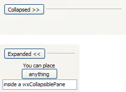

| Version: 2.9.4 |
#include </home/zeitlin/src/wx/github/interface/wx/collpane.h>
 Inheritance diagram for wxCollapsiblePane:
Inheritance diagram for wxCollapsiblePane:A collapsible pane is a container with an embedded button-like control which can be used by the user to collapse or expand the pane's contents.
Once constructed you should use the GetPane() function to access the pane and add your controls inside it (i.e. use the returned pointer from GetPane() as parent for the controls which must go in the pane, not the wxCollapsiblePane itself!).
Note that because of its nature of control which can dynamically (and drastically) change its size at run-time under user-input, when putting wxCollapsiblePane inside a wxSizer you should be careful to add it with a proportion value of zero; this is because otherwise all other windows with non-null proportion values will automatically resize each time the user expands or collapse the pane window usually resulting in a weird, flickering effect.
Usage sample:
wxCollapsiblePane *collpane = new wxCollapsiblePane(this, wxID_ANY, "Details:"); // add the pane with a zero proportion value to the 'sz' sizer which contains it sz->Add(collpane, 0, wxGROW|wxALL, 5); // now add a test label in the collapsible pane using a sizer to layout it: wxWindow *win = collpane->GetPane(); wxSizer *paneSz = new wxBoxSizer(wxVERTICAL); paneSz->Add(new wxStaticText(win, wxID_ANY, "test!"), 1, wxGROW|wxALL, 2); win->SetSizer(paneSz); paneSz->SetSizeHints(win);
It is only available if wxUSE_COLLPANE is set to 1 (the default).
This class supports the following styles:
The following event handler macros redirect the events to member function handlers 'func' with prototypes like:
Event macros for events emitted by this class:
|  |  |  |
| wxMSW appearance | wxGTK appearance | wxMac appearance |
Public Member Functions | |
| wxCollapsiblePane () | |
| Default constructor. | |
| wxCollapsiblePane (wxWindow *parent, wxWindowID id, const wxString &label, const wxPoint &pos=wxDefaultPosition, const wxSize &size=wxDefaultSize, long style=wxCP_DEFAULT_STYLE, const wxValidator &validator=wxDefaultValidator, const wxString &name=wxCollapsiblePaneNameStr) | |
| Initializes the object and calls Create() with all the parameters. | |
| bool | Create (wxWindow *parent, wxWindowID id, const wxString &label, const wxPoint &pos=wxDefaultPosition, const wxSize &size=wxDefaultSize, long style=wxCP_DEFAULT_STYLE, const wxValidator &validator=wxDefaultValidator, const wxString &name=wxCollapsiblePaneNameStr) |
| virtual void | Collapse (bool collapse=true) |
| Collapses or expands the pane window. | |
| void | Expand () |
| Same as calling Collapse(false). | |
| virtual wxWindow * | GetPane () const |
| Returns a pointer to the pane window. | |
| virtual bool | IsCollapsed () const |
| Returns true if the pane window is currently hidden. | |
| bool | IsExpanded () const |
| Returns true if the pane window is currently shown. | |
| wxCollapsiblePane::wxCollapsiblePane | ( | ) |
Default constructor.
| wxCollapsiblePane::wxCollapsiblePane | ( | wxWindow * | parent, |
| wxWindowID | id, | ||
| const wxString & | label, | ||
| const wxPoint & | pos = wxDefaultPosition, |
||
| const wxSize & | size = wxDefaultSize, |
||
| long | style = wxCP_DEFAULT_STYLE, |
||
| const wxValidator & | validator = wxDefaultValidator, |
||
| const wxString & | name = wxCollapsiblePaneNameStr |
||
| ) |
Initializes the object and calls Create() with all the parameters.
| virtual void wxCollapsiblePane::Collapse | ( | bool | collapse = true | ) | [virtual] |
Collapses or expands the pane window.
| bool wxCollapsiblePane::Create | ( | wxWindow * | parent, |
| wxWindowID | id, | ||
| const wxString & | label, | ||
| const wxPoint & | pos = wxDefaultPosition, |
||
| const wxSize & | size = wxDefaultSize, |
||
| long | style = wxCP_DEFAULT_STYLE, |
||
| const wxValidator & | validator = wxDefaultValidator, |
||
| const wxString & | name = wxCollapsiblePaneNameStr |
||
| ) |
| parent | Parent window, must not be non-NULL. |
| id | The identifier for the control. |
| label | The initial label shown in the button which allows the user to expand or collapse the pane window. |
| pos | Initial position. |
| size | Initial size. |
| style | The window style, see wxCP_* flags. |
| validator | Validator which can be used for additional date checks. |
| name | Control name. |
| void wxCollapsiblePane::Expand | ( | ) |
Same as calling Collapse(false).
| virtual wxWindow* wxCollapsiblePane::GetPane | ( | ) | const [virtual] |
Returns a pointer to the pane window.
Add controls to the returned wxWindow to make them collapsible.
| virtual bool wxCollapsiblePane::IsCollapsed | ( | ) | const [virtual] |
Returns true if the pane window is currently hidden.
| bool wxCollapsiblePane::IsExpanded | ( | ) | const |
Returns true if the pane window is currently shown.